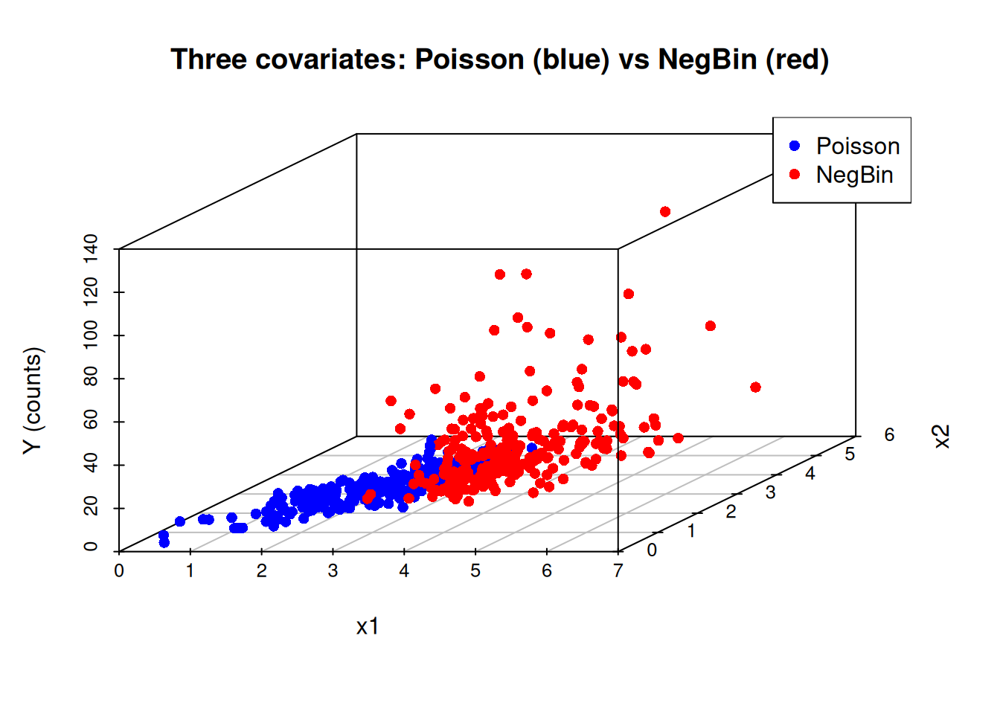

library(MASS) # for mvrnorm
library(np)Nonparametric Kernel Methods for Mixed Datatypes (version 0.60-20)
[vignette("np_faq",package="np") provides answers to frequently asked questions]
[vignette("np",package="np") an overview]
[vignette("entropy_np",package="np") an overview of entropy-based methods]set.seed(123)
n <- 500
# correlation matrix
Sigma <- matrix(c(
1, 0.5, 0.3,
0.5, 1, 0.4,
0.3, 0.4, 1
), nrow = 3)
# generate correlated covariates
X <- mvrnorm(n, mu = c(3, 3, 3), Sigma = Sigma)
x1 <- X[, 1]
x2 <- X[, 2]
x3 <- X[, 3]
mean(x1)[1] 2.984912# coefficients
beta0 <- 0.5
beta1 <- 0.8
beta2 <- -0.5
beta3 <- 0.3
mu <- exp(beta0 + beta1 * x1 + beta2 * x2 + beta3 * x3)
# generate two-regime counts
size <- 2
y <- numeric(n)
cutoff <- median(x1)
y[x1 < cutoff] <- rpois(sum(x1 < cutoff), mu[x1 < cutoff])
y[x1 >= cutoff] <- rnbinom(sum(x1 >= cutoff), mu = mu[x1 >= cutoff], size = size)
# assemble dataframe
data <- data.frame(X1 = x1, X2 = x2, X3 = x3, Y = y, REGIME = ifelse(x1 < cutoff, "Poisson", "NegBin"))
# install.packages("scatterplot3d") # if not installed
library(scatterplot3d)
# assume your data frame is `data` with columns x1, x2, x3, y, regime
colors <- ifelse(data$REGIME == "Poisson", "blue", "red")
scatterplot3d(
x = data$X1,
y = data$X2,
z = data$Y,
color = colors,
pch = 16,
main = "Three covariates: Poisson (blue) vs NegBin (red)",
xlab = "x1",
ylab = "x2",
zlab = "Y (counts)"
)
legend("topright", legend = c("Poisson", "NegBin"), col = c("blue", "red"), pch = 16)
# Quick look
head(data) X1 X2 X3 Y REGIME
1 3.307228 4.083260 2.811895 13 NegBin
2 3.214149 3.887182 2.301815 10 NegBin
3 1.294889 1.560082 2.603392 3 Poisson
4 2.539055 2.903272 3.444360 13 Poisson
5 2.549866 4.462326 1.436596 1 Poisson
6 2.135322 1.028912 1.901595 10 Poissonwrite.csv(data, "../src/data/dgp.csv", row.names = FALSE, quote = FALSE)